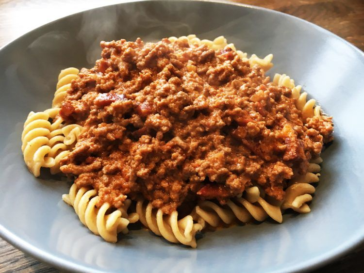

Pasta with meat sauce

Ingredients (2 servings)
- Pasta
- Minced beef
- Chopped tomatoes
- Onions
- Rapeseed oil
- Salt
- Pepper
Approach
- Peel and chop the onion.
- Boil water with a little salt and cook the pasta for 8-10 minutes.
- Fry the onion in the oil for 3-4 minutes.
- Add the minced beef and fry it until it is brown, about 6-8 minutes.
- Add the chopped tomatoes, the rest of the salt and the pepper. Let it simmer for 10 minutes.
- Drain the pasta and serve it with the sauce.
Rice with chicken, broccoli and soy sauce

Ingredients (4 servings)
- Rice
- Chicken breast
- Broccoli
- Soy sauce
- Rapeseed oil
Approach
- Cook the rice as it says on the package.
- Peel and chop the onion and fry it in the oil for 3 minutes.
- Add the minced beef and fry it until it is brown.
- Add the salt, pepper, paprika, cumin and chilli powder and stir for 1 minute.
- Add the chopped tomatoes and the kidney beans. Let it simmer for 15 minutes.
- Serve with the rice.
Chilli con carne with rice
Ingredients (4 servings)
- Rice
- Minced beef
- Cooked kidney beans
- Chopped tomatoes
- Onions
- Rapeseed oil
- Salt
- Pepper
- Paprika
- Ground cumin
- Chilli powder
Approach
- Cook the rice as it says on the package.
- Peel the onion and chop it together with the red pepper.
- Fry the onion and the pepper in the oil for 5 minutes.
- Add the salt, pepper, paprika, cumin and chilli powder and stir for 1 minute.
- Add the chopped tomatoes, the kidney beans and the sweetcorn. Let it simmer for 15 minutes.
- Serve with the rice.
Chilli sin carne with rice
Ingredients (2 servings)
- Rice
- Cooked kidney beans
- Canned sweetcorn
- Red bell pepper
- Chopped tomatoes
- Rapeseed oil
- Salt
- Pepper
- Paprika
- Ground cumin
- Chilli powder
Approach
- Cook the rice as it says on the package.
- Peel the onion and chop it together with the red pepper.
- Fry the onion and the pepper in the oil for 5 minutes.
- Add the salt, pepper, paprika, cumin and chilli powder and stir for 1 minute.
- Add the chopped tomatoes, the kidney beans and the sweetcorn. Let it simmer for 15 minutes.
- Serve with the rice.
Chicken curry with rice
Ingredients (2 servings)
- 250 g chicken breast
- 150 g rice
- 1 onion
- 1 tbsp curry powder
- 200 ml coconut milk
- 1 tbsp cooking oil
- Salt and pepper
Approach
- Cook the rice according to the package instructions.
- Cut the chicken into bite-sized pieces and chop the onion.
- Heat the oil in a pan and fry the onion for 2-3 minutes.
- Add the chicken and cook until the outside is no longer raw.
- Stir in the curry powder and coconut milk.
- Let the curry simmer for 8-10 minutes, until the chicken is fully cooked.
- Season with salt and pepper and serve with rice.